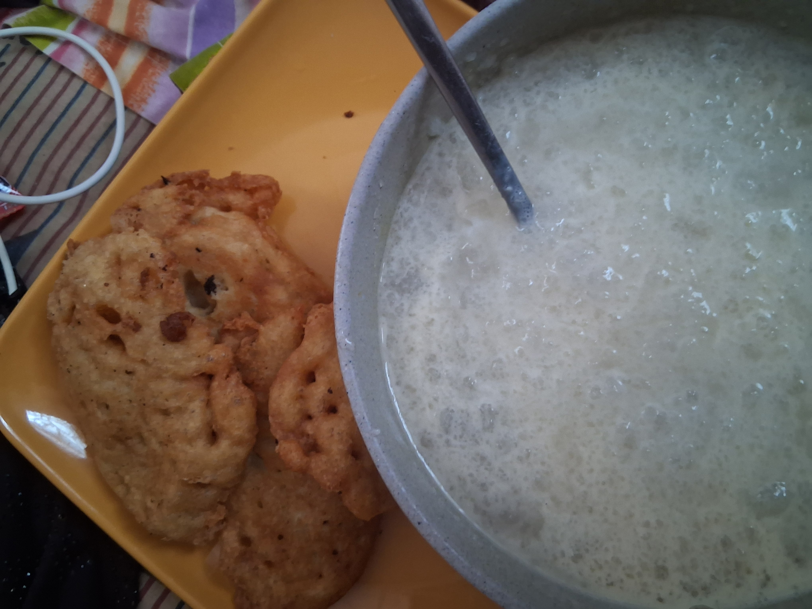

Tapioca Recipe
Tapioca is a Nigerian cereal like oats that is whitish in colour and is very filling. It is taken with sugar and milk. It can also be taken with coconut, dates and many more.
Ingredients
Instructions
- Soak 2 handfuls of Tapioca overnight
- Get a clean pot and put water on fire to boil
- Introduce the Tapioca to the boiling water slowly when the water start boiling
- Stir slowly and consistently until it is well done(the colour changes to pure white when done)
